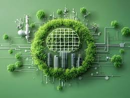

Projects

AI Circular Economy Tracker
Built a full-stack sustainability prediction system using Ridge Regression and Logistic Regression to estimate circularity score and classify waste levels based on industrial production parameters. Deployed via Flask with real-time recommendations and interactive-UI.
View Project